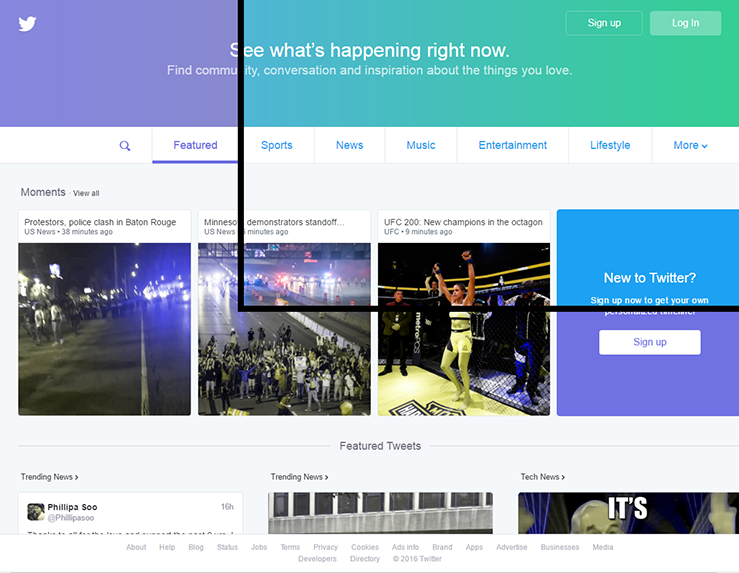
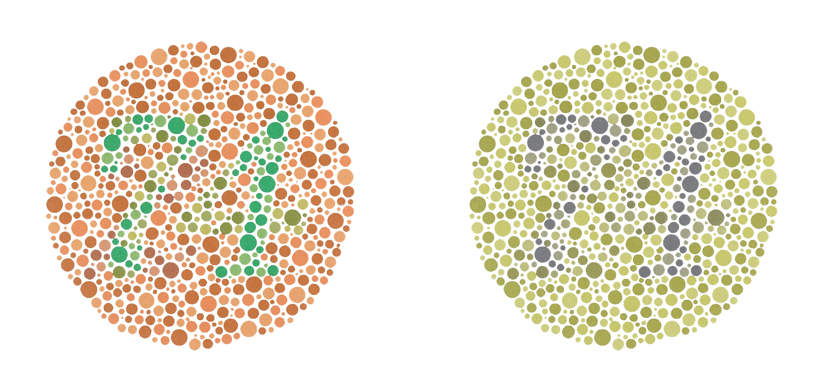
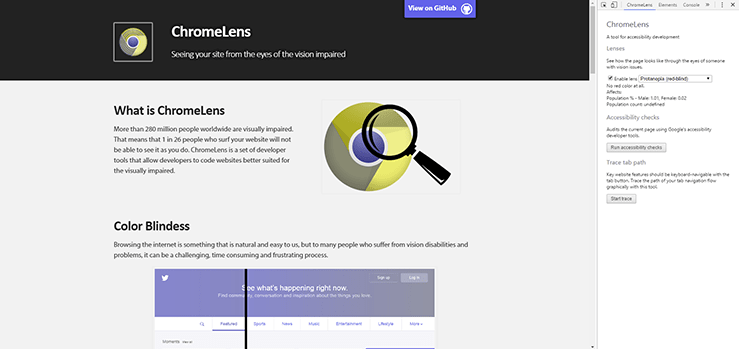

What is ChromeLens?
ChromeLens is a set of developer tools that allow developers to code websites better suited for the visually impaired.
The three tools that are currently available are:
- Filters to experience a website as a blind or colorblind person.
- Scanners to audit the accessibility readiness of a website.
- Trackers to visually show the path of a tab/shift-tab navigation flow with the keyboard
Why build Chromelens?
More than 280 million people worldwide are visually impaired. That means that 1 in 26 people who surf your website will not be able to see it as you do.
We want to provide tools to developers to gain more insight into how well prepared their websites are with web accessibility.
Color Blindness
Browsing the internet is natural and easy for a lot of people, but to the millions of people who suffer from vision disabilities, it can be a challenging, time consuming and frustrating process.
To help developers make their web pages friendly to the visually impaired, we created ChromeLens, an extension to Chrome that changes the look of web pages to reflect what they see.
The image on the right is what individuals with protanopia sees when looking at the image on the left.
Using ChromeLens
Install the ChromeLens extension by cloning our git repository (GitHub Link) or downloading from the Chrome Store and adding the project as an experimental extension. More details on experimental extensions can be found here
Filters
By checking the 'Enable Lens' checkbox, you turn on the color filters for ChromeLens, letting you choose between various 'color blindness' options, such as Protanopia which is restricted vision of the color red.
With the filters on, now you can browse your website as how a color blind person sees it.
Scanner
The ChromeLens Scanner will scan your webpage and assess how well it is designed for people with vision impairment. Simply click "Run Accessibility Checks" and it will highlight areas for improvement and provide suggestions on how you can improve upon your design.
Tracker
ChromeLens Tracker is a blindness simulator that shows the pathway by which a blind user will go through when browsing your web page with a screen reader. You can check if your web page goes through a logical flow and that the important content is included for the screen reader to narrate.